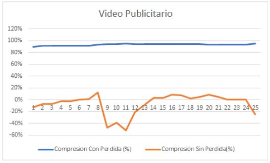
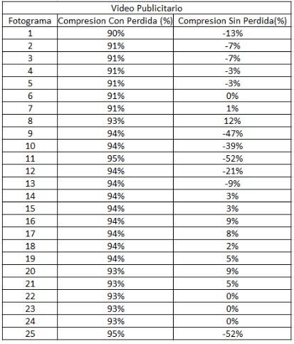
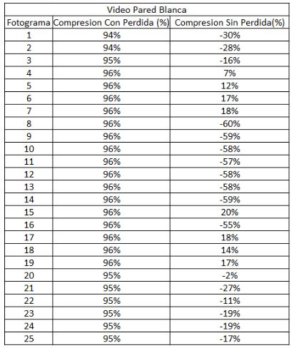
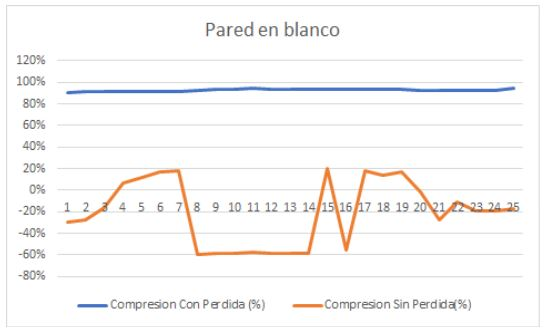

Introducción
Hoy en día, los tamaños de muchos videos, audios o aplicaciones pueden ser extremadamente grandes, por lo que la reducción del tamaño del archivo puede jugar un rol muy importante en la administración de recursos informáticos o en el tiempo de transmisión. El principal propósito de este artículo de investigación es implementar y analizar algoritmos de compresión de datos. La compresión de datos se puede definir como la reducción del volumen de datos de un archivo, es decir, utilizar una menor de cantidad de bits para representar un mismo archivo. Ahora bien, existen muchas técnicas y algoritmos para comprimir datos. Sin embargo, se tratarán únicamente los más comunes que permitan comprimir archivos de audio o video y garantizar la menor pérdida de datos posibles. Por otra parte, la compresión de datos sin pérdida se basa generalmente en buscar repeticiones, patrones o secuencias en series de datos para, posteriormente, almacenar el dato junto con el número de veces que se repite, esta nueva secuencia de símbolos puede ser almacenada o enviada a través de una red.
Contexto
En la actualidad, la tecnología ha avanzado en materia de procesamiento superando la capacidad de almacenamiento e inclusive, más rápido que los anchos de banda de la red, debido a que dichos anchos de banda necesitan de grandes cambios respecto a sus infraestructuras de telecomunicaciones. A causa de esto, es necesario un procedimiento para reducir el tamaño de los datos mediante el aprovechamiento máximo de la potencia de procesamiento de los procesadores.
La arquitectura Cliente-Servidor existía antes de la aparición de las redes de área local. El primer aproximamiento a esta arquitectura fue en 1960, en el que se tenía Mainframes manejados por el Command Prompt. En 1970, nacieron las aplicaciones interactivas en las que el usuario realizaba una acción con una interfaz y esta tenía una respuesta. En 1980, con el comienzo de las redes locales y con esta, el inicio de las eras de la computadora central, computadoras dedicadas, conexión libre y por último, a través de redes. Para el año 2000, se implementó la combinación de mainframes con redes con el propósito de la creación de los Web Services.
El procesamiento para la compresión de datos se divide en dos ramas; compresión de datos con pérdida y compresión de datos sin pérdida. La primera mencionada busca una representación fiel del archivo original basándose en la menor información posible para representar a esta. No obstante, es imposible la reconstrucción exacta después de la ejecución del algoritmo. Esta es mayormente usada en contenido multimedia en la que el recorte de frames o el acotamiento de frecuencias imperceptibles para el oído humano, son vitales para el ahorro de recursos respecto a, por ejemplo, una transmisión de datos vía online. La segunda hace referencia a la conservación de la información, tanto antes como después de la ejecución del algoritmo. Dicha rama se basa en buscar patrones en los datos e indexarlos, junto con información como la frecuencia de aparición, orden en el que aparecen y otros datos significativos. Este método conlleva a mayores tiempos de procesamiento. Generalmente es utilizado en archivos de texto.
Para este proyecto es importante mencionar el concepto de entropía. En termodinámica, la entropía se define como el grado de desorden y de caos que existe en la naturaleza. Es magnífico cómo un concepto de la naturaleza puede aplicarse a una ciencia tan sintética como lo es el análisis de los datos. En teoría de la información, la entropía es la cantidad de información que aporta un dato. Un ejemplo es la frase “Yo quiero ir a la casa de Carlos mañana martes.”, con una oración con una menor cantidad de datos como “Yo quiero ir a la casa de Carlos mañana martes.”. Es claro que la última frase no respeta las reglas sintácticas del lenguaje, pero se puede entender el mensaje. Esto es lo que pretende la compresión de datos con pérdida, desechar los datos con menor entropía y que la información que se está enviando no se vea afectada.
Problema
Con una necesidad inicial de enviar un archivo de video por la red, restringido por el tamaño máximo del datagrama. Además de tener que enviarlo de una manera eficiente a modo de broadcasting. Para ajustarse a las restricciones que se presentan, era necesario realizar una compresión del archivo a enviar y encontrar el algoritmo que mejor se adaptara a las necesidades del problema. Sin embargo, el video que se iba a enviar no podía perder tanta calidad como para que no se entendiera lo que se está viendo. Por lo tanto, la conjunción de todos los aspectos ya mencionados formaron el problema que este proyecto de investigación busca solucionar.
Objetivos/Metas
Objetivos Generales
- Analizar la variación tanto del tamaño del video como en la calidad de forma subjetiva y objetivamente con cada algoritmo de compresión y con diferentes archivos multimedia.
Objetivos Específicos
- Implementar la modificación de dos algoritmos de compresión de contenido multimedia, bien sea audio o video, con el propósito de analizar variaciones en los mismos.
- Comparar la calidad del video antes y después de realizar la compresión del archivo en ambas implementaciones.
- Determinar qué tanto afecta el tamaño del archivo a ambos algoritmos.
Investigación
" Encuentra la metodoligía utilizada para está investigación "
" Encuentra los resultados y el análisis de datos "
" Encuentra recomendaciones para futuros trabajos "
Metodología
La metodología que se lleva a cabo en este proyecto es de tipo experimental, debido a que se probará la eficiencia y eficacia de los métodos de compresión en varios escenarios para así lograr tener una idea general del comportamiento de cada uno en los diferentes casos, a continuación se detalla el proceso que se debe realizar:
En primer lugar, se debe realizar el desarrollo de la aplicación junto con el servidor TCP que orqueste los partidos, para así poder añadir las funcionalidades del juego, además de permitir la conexión de varios clientes. Estos poseen la opción de salirse de la partida en cualquier momento, como también, de obtener un informe con los datos más relevantes del encuentro una vez terminada la partida
En segundo lugar, se desarrolla el servidor UDP que envíe la información del arreglo de bytes con cualquier método de compresión tradicional para posteriormente ser visualizado en frames (cuadros) por segundo determinando la velocidad mediante hilos. En este caso, se usó un algoritmo para comprimir un mapa de bits teniendo como parámetros el bitmap y la calidad que se quiere del archivo.
Ahora bien, se tienen los elementos principales que permiten jugar y realizar el envío de información, se puede continuar con la implementación sobre el servidor UDP de la siguiente manera:
Se debe elegir los algoritmos a implementar realizando las modificaciones necesarias para el envío de contenido multimedia.
La recopilación de la información se hará de forma experimental, es decir, implica la observación, el registro y la manipulación de las variables del objeto de estudio, de manera que se tomarán aproximadamente dos o tres muestras de tiempo y de los parámetros de calidad con cada algoritmo, ambos con un archivo del mismo tamaño, a esas mediciones se les calcula un promedio y se procede a modificar el tamaño del archivo para realizar nuevamente el experimento pero con otro tamaño del archivo.
Se tomará como ejemplo el estudio realizado por Sotelo y Joskowicz[11] en su artículo “Modelo de Estimación de Calidad de Video” para el desarrollo de las métricas respecto a la transmisión contenido audio visual. En este es necesario disponer de la imagen o cuadros originales, esto con el propósito de dar representación lo más fiel posible. El error cuadrático medio (MSE) descrito en la primera fórmula(1) junto a la raíz cuadrada (RMSE) en sus siglas en inglés Root Mean Square Error situada en la segunda fórmula(2), las cuales permiten encontrar una relación señal a ruido de pico (PSNR) ó Signal to Noise Ratio establecidas en la siguiente ecuación(3):
Figura 1. Fórmulas de la estimación de la calidad de video.
Según Sotelo y Joskowicz (2012), “En las ecuaciones (1) a (3) la imagen tiene N x M píxeles y T cuadros, x, y son los píxeles de la imagen original y la distorsionada respectivamente. L es el rango dinámico que pueden tomar los valores de x o y, y toma el valor 255 para 8 bits por píxel.”
Debido a la pérdida de información deberán encontrarse cambios notorios del archivo original al al introducido en el proceso de codificación por el algoritmo de compresión utilizado. Cabe resaltar que no solo se puede perder la calidad debido a la compresión, sino también, a factores como retrasos, pérdida de paquetes, etc, que son finalmente reflejados en la partida del cliente como frames cortados o pérdida de píxeles.
Figura 2. Comparación de compresión de la letra a.
En otro orden de ideas, no se descarta la posibilidad de utilizar metodología subjetiva en la que por medio de la opinión se valide mediante la inclusión de una rúbrica en la que se clasifique que tan óptimo puede ser el audio escuchado o la visualización de un video. Este es un recurso menos costoso en cuanto a implementación se refiere. “La opinión media, obtenida en forma directa mediante el “MOS” (Mean Opinion Score), (...) los evaluadores son individuos que juzgan la calidad en base a su propia percepción y experiencia previa.” (Sotelo, Joskowicz. 2012). Por tanto, no es necesario un conocimiento en el área de Redes y Computación como criterio de validación de la experiencia del cliente con la aplicación. Como se observa en la figura 1, a la derecha procesada y la izquierda sin procesar, es posible que, en base a la experiencia de cada usuario, haya opiniones distintas acerca de cuál podría ser una mejor imagen.
Tabla 1. Rúbrica de compresión de video mediante metodología subjetiva.
Se estableció una tabla en la que mediante un rango del 1 al 10 el cliente pueda establecer su experiencia dependiendo de qué tan agresivo pueda ser el algoritmo o factores anteriormente mencionados, siendo 1-0 las puntuaciones más bajas y 9-10 las altas siendo estas las más fieles al contenido original.
Resultados y Análisis
Se utilizaron dos algoritmos de compresión para la futura evaluación y análisis de resultados con el propósito de comparar la eficiencia, ventajas y desventajas que cuenta cada uno de estos, así como también, el porcentaje de compresión de cada fotograma y la calidad con la que se reconstruye el video después de ser comprimido.
El primero es un algoritmo de compresión con pérdida, es decir, su objetivo es representar cierta cantidad de información utilizando una menor cantidad de bits, siendo imposible la reconstrucción exacta de los datos, debido a que el algoritmo aprovecha cambios imperceptibles en las imágenes para realizar acotaciones de frames y así, disminuir la cantidad de información del archivo. Por otro lado, el segundo es completamente lo opuesto, un algoritmo de compresión sin pérdida, el cual sí busca una representación fiel del archivo inicial mediante la búsqueda de patrones en la información sin realizar aproximaciones. Además para este algoritmo, a diferencia del anterior, sí resulta necesario implementar un algoritmo de descompresión para poder visualizar el archivo.
Con el objetivo de profundizar en los resultados obtenidos, no solo se tuvo en cuenta como prueba el material audiovisual publicitario como requerimiento propuesto en el enunciado brindado para el proyecto, también se puso a prueba en otro escenario donde el fondo no tuviera tanto cambios de color y contraste para analizar el potencial de los algoritmos a evaluar.
Para el primer escenario, se obtuvieron los siguientes resultados de acuerdo al material audiovisual publicitario tanto para el algoritmo con pérdida de información como el algoritmo sin pérdida de información:

Gráfico 1. Algoritmos de compresión para el primer escenario (Video publicitario).
Tabla 2. Algoritmos de compresión para el primer escenario (Video publicitario).
En la tabla 2 y el gráfico 1 se representa la proporción en que se comprime cada fotograma de acuerdo al Array de Bytes con ambos algoritmos con el video publicitario. Esta proporción se obtiene de la división del número de bytes del fotograma comprimido entre en el número de bytes del fotograma original, es decir, a un mayor porcentaje se considera una compresión más óptima. Para este caso, se tomaron los primeros 25 fotogramas como muestra representativa obteniendo como resultado una media de 93% para el caso del algoritmo con pérdida y -22% con el algoritmo sin pérdida. Resulta evidente que el algoritmo con pérdida comprimió mucho más, sin embargo, se debe tener en cuenta que al perder información, se sacrifica calidad en el video debido a la compresión de los fotogramas. Por otra parte, el algoritmo de compresión sin pérdida arrojó un archivo más pesado debido a que se agregaron bytes de headers para identificar los patrones al momento de comprimir. Como ya se mencionó, el algoritmo sin pérdida no es muy eficiente para videos, por lo que no se pudo resumir la información por los pocos patrones que se encuentran.
Para el segundo escenario, se realizó la misma prueba con un video de una pared en blanco y sin movimiento. El propósito de este caso es tener un escenario en el cual el video tenga menos información como colores, movimientos, contraste, entre otros. Con la finalidad de que resulte más fácil encontrar patrones entre los fotogramas.
En la tabla 3 y el gráfico 2 se representa la proporción en que se comprime cada fotograma de acuerdo al Array de Bytes con ambos algoritmos con el video de la pared en blanco. Nuevamente se tomó una muestra de los primeros 25 fotogramas y se obtuvo una media del 96% para el algoritmo con pérdida y de 7% para el algoritmo sin pérdida.

Tabla 3. Algoritmos de compresión para el segundo escenario (Pared en blanco).
Si se compara las medias de ambos videos, se observa que el video con la pared en blanco se comprime en mayor porcentaje con ambos algoritmos, aunque este se hace más evidente con el algoritmo sin pérdida pues en el primer escenario la media fue de -22% y para el segundo de 7% pasando de aumentar el tamaño del archivo a disminuirlo al menos un poco, sin poner en juego la calidad del video. En el caso del algoritmo con pérdida, se observa un incremento del 3%, lo que indica que sí se comprimió más con el video de la pared en blanco debido a que el algoritmo también es más eficiente con un video con menos contrastes y movimiento, por lo tanto, el porcentaje de compresión será mejor.
Gráfico 2. Algoritmos de compresión para el segundo escenario (Pared en blanco).
Ahora bien, en cuanto a calidad del video se tomaron dos métricas para la estimación de la misma que se basan en obtener la diferencia pixel a pixel entre los fotogramas de la imagen original y los fotogramas comprimidos, la primer métrica es el MSE que sería el error cuadrático medio entre las señales que mide el promedio de los errores al cuadrado, es decir, la diferencia entre el estimador y lo que se estima. La segunda métrica es el PSNR (Proporción Máxima de Señal a Ruido) la cual es utilizada en ingeniería para definir la relación entre la máxima energía posible de una señal y el ruido que afecta a su representación fidedigna. Los resultados obtenidos en cada escenario fueron los siguientes:
Tabla 4. Indicadores de calidad objetiva.
El MSE para el video publicitario es casi el doble de lo obtenido para el video de la pared en blanco, esto se debe a que como el primero contiene mayor cantidad de información se genera un error más grande, es decir, una diferencia mayor entre los píxeles del video original y el comprimido. Adicionalmente, el PSNR es directamente proporcional a la calidad obtenida, entre mayor sea el PSNR, así mismo será la calidad del video. Por lo tanto, se evidencia que el video que menos calidad perdió es el de la pared en blanco con un PSNR de 90.03 dB.
El MPEG que es un grupo de expertos que establecen estándares para el audio y la transmisión video, emplean un valor umbral informal de 0,5 dB en el incremento del PSNR para decidir si se incluye una determinada mejora en un algoritmo de codificación, ya que se considera que este aumento del PSNR es apreciable visualmente. Por lo tanto, puede afirmarse que el video de la pared en blanco presenta una mejor calidad apreciable para el usuario y que se deben realizar mejoras en la codificación del algoritmo de compresión para el video publicitario.
Sin embargo, como el cambio en la calidad puede ser perceptible para el usuario también se debe tener en cuenta la subjetividad de las personas en cuanto a la apreciación de la calidad del video, así que se tomó la opinión de 5 personas para obtener los siguientes resultados:
Tabla 5. Indicadores de calidad subjetiva.
Con la información de la tabla 5, donde se encuentran las opiniones de calidad subjetiva de ambos videos, se puede determinar que en realidad el cambio en la calidad no resulta perceptible por el usuario final de la misma forma en que indican las métricas.
Finalmente, se hizo un híbrido de ambos algoritmos. Primero, se comprimió el video con pérdida para posteriormente comprimir los datos resultantes sin pérdida. Los resultados fueron satisfactorios, se pudo reducir un poco más el tamaño del archivo y el algoritmo de compresión sin pérdida pudo mejorar el resultado del sin pérdida, esto debido a que el con pérdida elimina redundancias y ruido del archivo original, por lo que los datos que finalmente quedan están más relacionados entre sí. Gracias a esto, el algoritmo sin pérdida encuentra más patrones en los datos. Es importante mencionar que esta prueba se realizó únicamente con el video publicitario.
En conclusión, se evidenció el comportamiento de 2 algoritmos con diferente enfoque en 2 escenarios distintos, que permitieron identificar qué algoritmo de compresión sería mejor en determinado escenario, por ejemplo si el video tiene mucho movimiento, colores y contrastes seria mejor usar el algoritmo con pérdida de información pues comprime aún más el archivo y la pérdida de información no es tan evidente, a diferencia de un escenario en el que casi no cambie o no tenga tanta información donde se podría usar un algoritmo sin pérdida que comprime la información sin sacrificar la calidad. En todo caso cabe recalcar que lo más importante es elegir el algoritmo que mejor se adapte a la necesidad, por ejemplo, no sería buena idea para una aplicación como Netflix aplicar algoritmos de compresión con pérdida que le hicieran perder calidad en sus películas y series.
Referencias
[1] Castaño, J. (2019, Agosto). Guidelines research and development project. Recuperado 27 septiembre, 2019, de: target="_blank" https://drive.google.com/open?id=1l0ZPy98oXhmy_bejUkuQoI5jWcCioimO
[2] Molina, C. Morales, J. Castillo, J. Escobar, A. (2019, Septiembre). Networks Project. Recuperado 27 septiembre, 2019, de: target="_blank" https://github.com/JoseGerley/Networks-Project
[3] Marini, E. (2012). El Modelo Cliente/Servidor. Madrid: linuxito.
[4] Birrell, A. D. (1989). An introduction to programming with threads. Digital. Systems Research Center.
[5] Burrows, M., & Wheeler, D. J. (1994). A orting lossless data compression algorithm.
[6] Wang, S. (2019, 27 mayo). Multimedia data compression storage of sensor network based on improve. Recuperado 26 septiembre, 2019, de: target="_blank" https://link.springer.com/article/10.1007%2Fs11042-019-07765-0
[7] Sayood, K. (2017). Introduction to data compression. Morgan Kaufmann.
[8] Nelson, M., & Gailly, J. P. (s.f.-b). The Data Compression Book. University of Bahrain, Bahrain: CSA215: Data Compression Techniques. Recuperado octubre, 2019, de:target="_blank" http://staff.uob.edu.bh/files/781231507_files/The-Data-Compression-Book-2nd-edition.pdf
[9] Dhawan, S. (2011, marzo). A Review of Image Compression and Comparison of its Algorithms. Recuperado 25 octubre, 2019, de target="_blank" http://ceng460.cankaya.edu.tr/uploads/files/file/Review%20paper.pdf
[10] Agarwal, S., Bej, T., & Bhattacharjee, A. (2013, junio). Comparison Study of Lossless Data Compression Algorithms for Text Data. Recuperado 25 octubre, 2019, de target="_blank" https://pdfs.semanticscholar.org/ac77/7e46e7473c9e20ae94cceb58dcd4c058ce01.pdf
[11] Sotelo, R., & Joskowicz, J. (2012, junio). Modelo de Estimación de Calidad de Video: Video Quality Experts Groups. Recuperado 25 octubre, 2019, de target="_blank" https://iie.fing.edu.uy/~josej/docs/Modelos%20de%20estimacion%20de%20calidad%20de%20video.pdf
[12] Ramón, H. (s.f.). Métricas de Error en Algoritmos de Transmisión de Imágenes comprimidas con pérdida. Recuperado 25 octubre, 2019, de: target="_blank" http://sedici.unlp.edu.ar/bitstream/handle/10915/4056/Documento_completo__.pdf?sequence=25&isAllowed=y